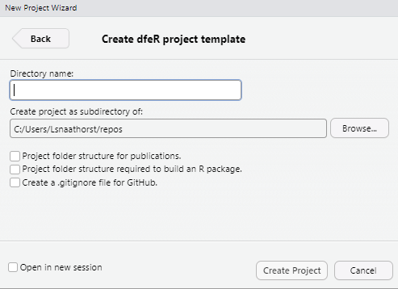

Introduction and prerequisites
The dfeR package can be used to create a new R project
using the create_project() function. This function helps
you set up a pre-populated project with a custom folder structure,
making it easier to start your analysis or publication. In order to use
this function, you will need to ensure you have the right software
installed, and have an understanding of R projects and
renv.
If you are familiar with all of the above, you can go to the Using the create_project() function section of this page or the create_project() reference for an overview of the usage, arguments and examples.
You can create a project using the create_project()
function using code or using the ‘New Project Wizard’ in RStudio. The
‘New Project Wizard’ is a user-friendly way to set up a new project
without writing any code. This guide covers both methods.
Prerequisites
Before you begin, ensure you have the following installed.
- R for Windows (x64) - version 4.0.0 or higher
- RTools (for Windows users and the version must match the R version)
- RStudio
- The
dfeRpackage
See the information below for installing if you don’t have these already.
What is RStudio?
RStudio is an integrated development environment (IDE) for R. It provides a user-friendly interface for writing and running R code, managing files, and visualising data. You can download R (language) and RStudio (IDE) from the DfE software center. You also must download RTools (a helpful R extension) at the same time to use renv.
How do I install dfeR?
dfeR is available on CRAN and you can install directly
from there by typing the below code into the console window in
RStudio:
install.packages("dfeR")The dfeR documentation gives more details on options for installing.
What is an R project?
An R project is a working directory designated for a specific analysis or project. It keeps all your scripts, data, functions and outputs together in one place. RStudio allows you to switch between your projects easily, meaning you can keep your different pieces of work separate from each other.
Whenever you are using RStudio, you should work in an R project. This makes sure you are set up in the correct working directory, so your code is pointing at the right folders and files. You can find out more in this guide for using projects in R.
What is renv?
Packages and versions of R regularly update. Over time, this can cause code to break - e.g., if different dependencies are required for later versions of packages to work. Using renv creates a “snapshot” of your code and packages at the time you created it, which anyone can then recreate when they come to use your code. This means that you can be sure that the code you wrote will work in the future, even if packages are updated.
You should use the renv package for package version control in R. It creates a project-specific library, meaning that installing a new or updated package for one project won’t break your other projects. This is particularly useful for reproducibility and collaboration, as it ensures that your project will work with the same package versions on different machines. You can find out more about renv on the Analysts’ Guide.
What is testthat?
testthat is an R package that helps you write and run
tests to ensure your code works correctly. It allows you to create tests
that check if your functions produce the expected results, run these
tests to catch errors early, and gives you confidence that your code is
reliable and behaves as intended. It’s a valuable tool for maintaining
high-quality, bug-free code.
See this guide on testing by Hadley Wickham for getting started.
What is a GitHub .gitignore file?
A .gitignore file is a text file that tells Git which files or directories to ignore in a project. It helps you avoid committing sensitive information, temporary files, or other unnecessary files to your Git repository. By creating a .gitignore file, you can keep your repository clean and focused on the essential files needed for your project. Find more guidance on how to avoid revealing sensitive information on the Analysts’ Guide.
Using the create_project() function
The create_project() function is a part of the
dfeR package and is used to create a new R project with a
custom folder structure. It is designed to help you set up your project
quickly and efficiently, with all the necessary components in place.
The function works by:
Setting up the core project structure: The core project structure will either create an ad-hoc project folder structure, which includes folders for data, analysis and output, or a larger folder structure for publication projects, which includes more folders for different data, analysis, documentation and outputs.
Adding initial files: The script creates some initial files, such as a template README file to help you get started with your project. It also initialises the
testthatpackage, which is used for unit testing in R.Customisation: Other files or processes can also be initialised depending on whether you set extra arguments as
TRUEorFALSE. For example, you can use customisation to create a GitHub .gitignore file or initialise therenvpackage.
Where to save your project
You should store any projects that use Git outside of OneDrive. To create a folder in your C drive, type: ‘C:/Users/[username]’ into the File Explorer search bar and create a folder called ‘repos’. For example, if your user was JBLOGGS, you’d type ‘C:/Users/JBLOGGS’.
Parameters
When creating a project using the create_project()
function, you will need to decide on several parameters. These
parameters are necessary whether you use code or the ‘New Project
Wizard’ to create your project. If you are using the ‘New Project
Wizard’, the parameters which need a
TRUE/FALSE input will be set to
TRUE by ticking a checkbox. The table below explains each
of the parameters, their meaning and what you should take into account
for each.
| Parameter | Meaning | Considerations | Output |
|---|---|---|---|
| path | Folder pathway | Where do you want to store your project? | This will be the folder your new project is created within. |
| init_renv | Initiate renv in the project | Do you want to use renv for package version control? |
If set to TRUE, renv will be initialised in your project.
|
| include_structure_for_pkg | Additional folder for package development | Are you creating this project to work on a package? |
If set to TRUE, an extra package development folder will be
created
|
| create_publication_proj | Create project with structure for publications | Should the folder structure be for a publication project? |
If set to TRUE, extra publication specific folders will be
created
|
| include_github_gitignore | Include a GitHub .gitignore file | Do you want to exclude certain files from being tracked by Git? |
If set to TRUE, a GitHub .gitignore file will be created.
|
When using the ‘New Project Wizard’, you will be prompted to enter these parameters manually by filling in provided boxes or ticking the appropriate checkboxes. Regardless of the method you choose, you will need to make a decision for each parameter to create the appropriate type of project.
Creating a project using code
Here is the basic code you will need to use, having installed
dfeR:
dfeR::create_project(
path = "C:/path/to/your/new/project",
init_renv = TRUE,
include_structure_for_pkg = FALSE,
create_publication_proj = FALSE,
include_github_gitignore = TRUE
)Example use
The below code will create a new project in the specified folder path, with renv initialised, a publication project structure, and a GitHub .gitignore file included.
# Load the dfeR package
library(dfeR)
# Create a new project with the desired parameters
dfeR::create_project(
path = "C:/Users/JBLOGGS/repos/my-new-project",
init_renv = TRUE,
include_structure_for_pkg = FALSE,
create_publication_proj = TRUE,
include_github_gitignore = TRUE
)You can view this by going to the location of the pathway you chose in File Explorer. You should find your new project there, inside a folder with the name you added at the end of your pathway, as below.
 You will also need to think about what you want your project to be
called and include this in your file path. You can always amend this
later.
You will also need to think about what you want your project to be
called and include this in your file path. You can always amend this
later.
For example, if you want to create a project called “my-new-project” in the folder you created above, your file path (with the username changed to your username) would be “C:/Users/JBLOGGS/repos/my-new-project”.
You can create a project in a different location, but you will need to change the file path accordingly.
You can then open the project by double-clicking on the R project
file. You should be able to identify it, as it has an R symbol in a
cube, and the file type will be shown as ‘R Project’. If you have set
create_publication_proj to FALSE, you will
find your folders will look a little different to the above.
You can amend the file structure and names to suit the particular project you are working on, using the file structure created as a template.
Creating a project using the ‘New Project Wizard’
If you are using RStudio, you can also create a new project using the ‘New Project Wizard’. This is a user-friendly way to set up a new project without writing any code. To do this, follow these steps:
Open RStudio and go to ‘File’ > ‘New Project’ > ‘New Directory’
Scroll down and click on ‘dfeR project template’.
-
Enter the name of your project under ‘Directory name’
- You can choose a location to save your project by clicking ‘Browse’.
-
Decide whether you want to have a project structure specifically for publications or a package.
- Leaving these both unticked will give you a project with a generic analysis project structure.
Decide whether you would like a GitHub .gitignore file by ticking or unticking the box.
Click ‘Create Project’ to set up your new project.

You can also access the ‘New Project Wizard’ by clicking on the project that you are currently in, in the top-right hand corner and then selecting ‘New Project’.
As above, you can access your new project by going to the location of the pathway you chose in File Explorer. You should find your new project there, inside a folder with the name you added as the directory name.
Troubleshooting
You may hit an error if the init_renv parameter is not
set to FALSE. This initiates renv in the created project,
which is best practice. However, the renv.lock is set up to
record several packages (rmarkdown, testthat,
renv, stringr). You may get the following
error message, letting you know that none of these packages are
installed:
“None of the packages recorded in the lockfile are currently installed.”
This can be rectified by executing 'renv::restore()' in
your console, which will install those packages.